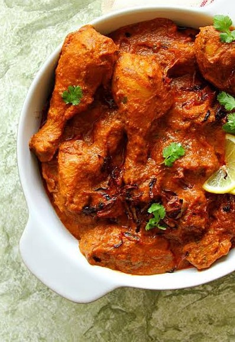

Dum Ka Chicken
Non-Veg · Chicken slow-cooked in a sealed pot until tender
Your photo goes here
(save it as images/dum-ka-chicken.jpg)
(save it as images/dum-ka-chicken.jpg)

Ingredients checklist
0 of 0 ingredients ready
You have everything. Time to cook!
Instructions
- Mix the chicken with all the marinade ingredients (yogurt, ginger-garlic paste, chilli powder, turmeric, coriander powder, garam masala, lemon juice and salt). Cover and rest for at least 1 hour.
- Heat the oil in a heavy-bottomed pot. Fry the sliced onions until deep golden brown. Take out half and set aside for garnish.
- Add the ghee, whole spices and cumin seeds to the pot with the remaining onions. Let them sizzle for 30 seconds.
- Add the marinated chicken and green chillies. Cook on medium heat for 10 to 12 minutes, stirring now and then, until the chicken changes colour.
- Stir in the cashew paste and half of the coriander leaves.
- Cover the pot with a tight lid and seal the edges with the dough so no steam escapes.
- Cook on the lowest heat (dum) for 30 to 35 minutes. Switch off the heat and rest for 10 minutes before opening.
- Open the lid, garnish with the fried onions and remaining coriander, and serve hot with rotis or rice.